10 November 2026 · web /watch (desktop and phone width), Android TV APK on the emulator, phone app read from code · critique and redesign only, nothing built
The server is ahead of every client. Most of what feels unfinished is the clients hiding or faking what the server already knows. On TV, the remote experience was carried over from mouse and touch rather than designed for it.
The worst of it
Ranked. S0 means fix before anyone else uses it. The full list, 25 items, is in critique.md next to this page.
S0
Web rows don't scroll, and there's no See all
The row grid lets each row grow as wide as its contents (4331 px in a 1440 px window), so a rail never overflows. The arrows have nothing to move and are invisible until hover.
Films for tonight has 15 titles; you can reach 6. A one-line CSS fix (.kw-row{min-width:0}) made every row scroll when I tried it in the page.
There's no "See all" page on any client.
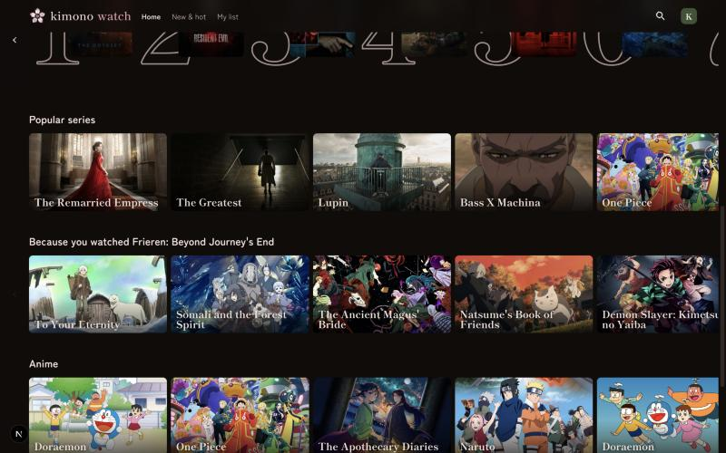
Rows run off the page
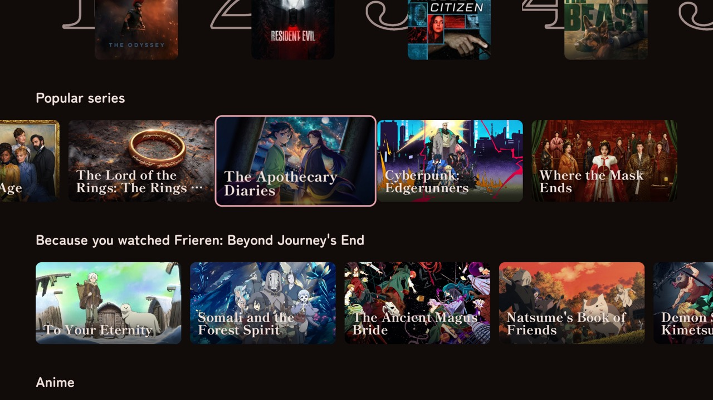
TV rows do scroll
S0
The loading percentage is made up
The web counts toward 90% on a timer. It sat at 89% for about 50 seconds while the stream was being prepared.
Android reaches 99% in 6 seconds whatever is happening.
The real stages are knowable: finding a copy, choosing one, preparing it, buffering.
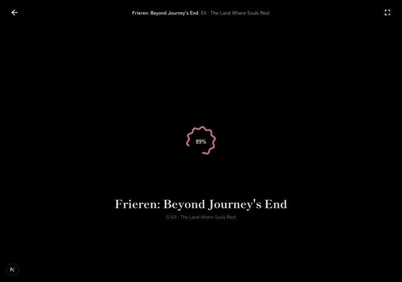
Web, 50 s at 89%
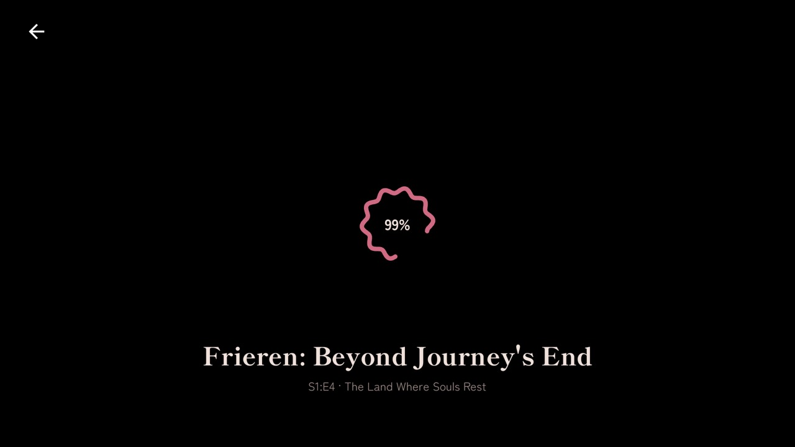
TV, 99% and waiting
S0
Language and playback preferences have no home
The server stores audio language, sub or dub, subtitles, autoplay, skip intros, fillers and per-device quality. The web shows only quality, in the avatar menu. Android shows nothing.
There's no subtitle size or style anywhere.
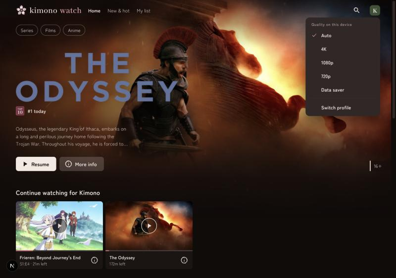
The only setting, under the avatar
S0
TV remote: you can't see focus, and the controls fight
The control row shows focus only as a slight scale on a white icon, and the labels are hidden on TV.
Five seconds after pausing, the pause card takes over. Left and right then seek a video you can't see, and the card, the buffering ring and the seek ripple stack on top of each other.
During the intro, OK skips instead of pausing.
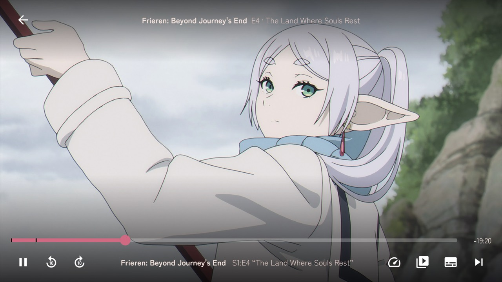
Which one has focus?
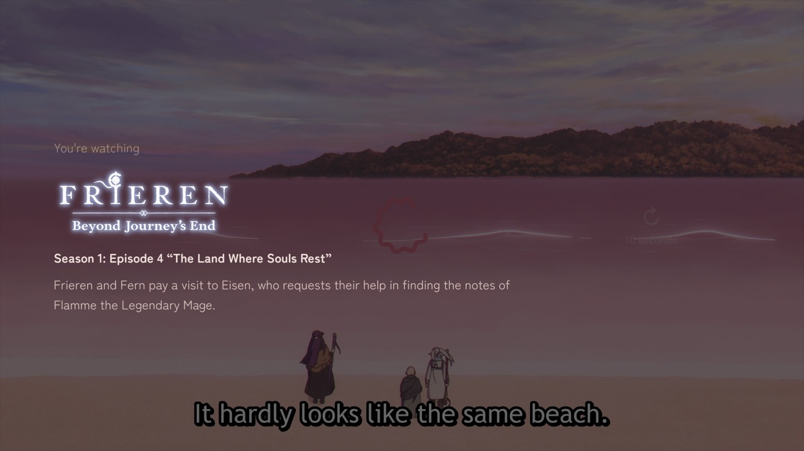
Three layers at once
S0
Quality is hidden, format tags are never shown
Web quality is filed under the speed icon. Android has no quality control at all. "Auto" never says what it picked.
The server already returns 4K / Dolby Vision / Atmos badges for each play. No client draws them.
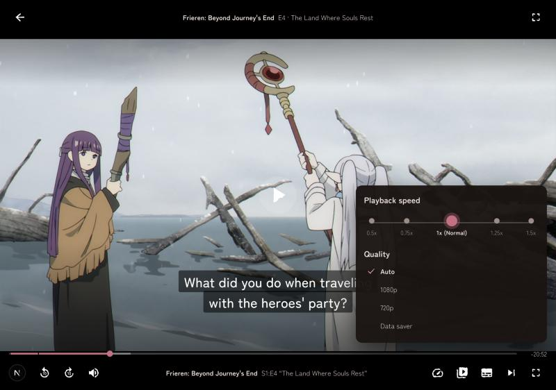
Quality under "Speed"
S1
Titles typed over the art read as unpolished
Mincho 800 at 15 to 20 px over busy stills wraps into the art, clips, and vanishes on light images. This comes from the approved reference.
We already have each title's logo art and only use it in the hero.
WebTV
S1
Raw release names in the subtitle menu
"English (9volt)", "Portuguese (FULL)" twice, "(FORCED)" in capitals.
The web uses the browser's grey caption box and Android draws an outline: two looks, and no setting.
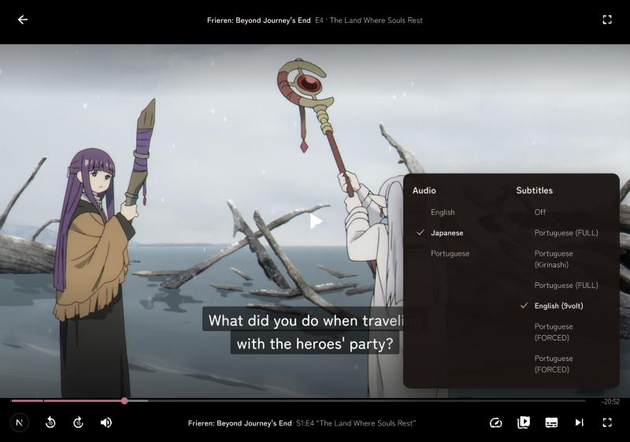
Track names leak
S1
Pills in the wrong place, three brands, duplicated chrome
Series / Films / Anime are generic pills sitting on the hero. On TV they collide with the title logo. They belong in the header.
Web uses the bloom lockup, TV a 観 seal with "KIMONO" in capitals, and the launcher says "Watch".
The title appears twice in the player, the web has two fullscreen buttons, and a ghost panel lingers after a sheet closes.
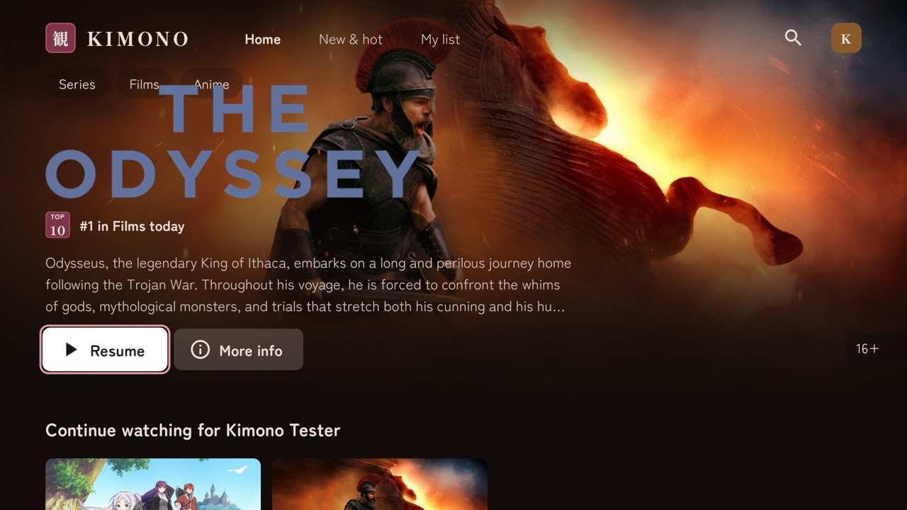
"Anime" on top of "THE"
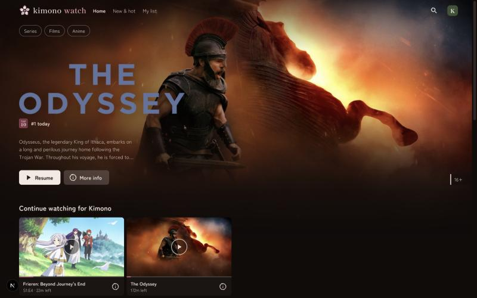
Pills under the nav
S2
Smaller but felt
The title page says "35 episodes left" next to "That's the end of the series so far".
Search on desktop is a list of phone rows, with no year, so two Doraemons look like duplicates.
My list's empty state is a single grey line. The account menu opens behind the title modal.
"172m left" should be "2 h 52 m left".
About 55 s to the first frame on the web, with nothing warmed up while the title page is open.
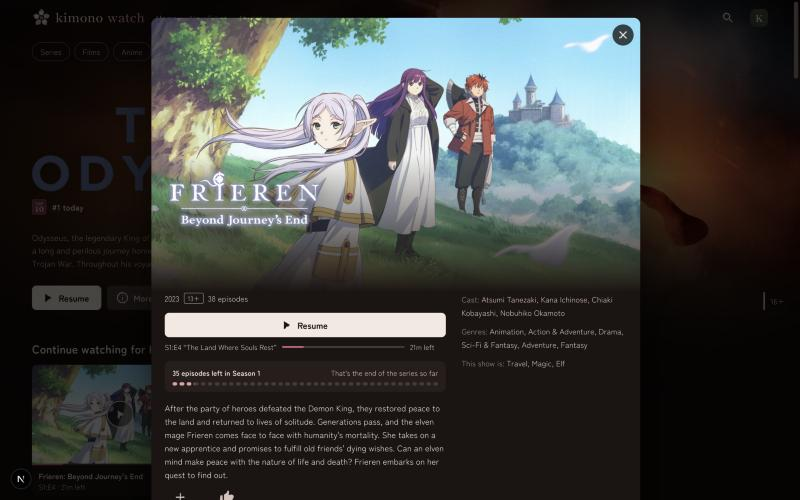
Contradicting tracker
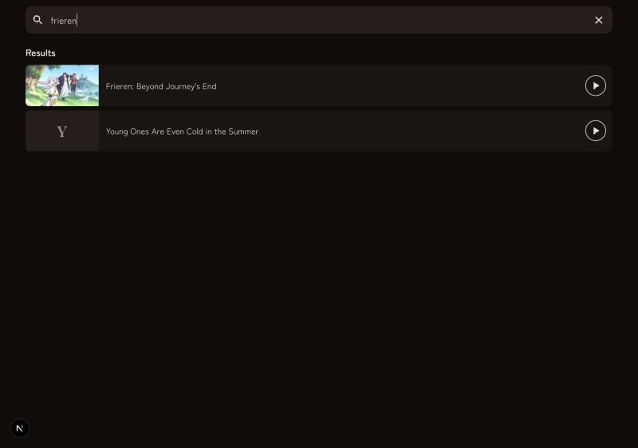
Search
Where the approved reference falls short
The reference set the card titles in Mincho over the art, and it has no settings, format tags, sort, loading stages or TV focus model. That's why none of them got built. Its palette, Top 10, hover card, pause card and shrinking end card are good and stay.
The player on TV
Every control is labelled, focus is a paper ring you can see from the sofa, and the skip button takes focus when it appears, so OK does what the screen shows.
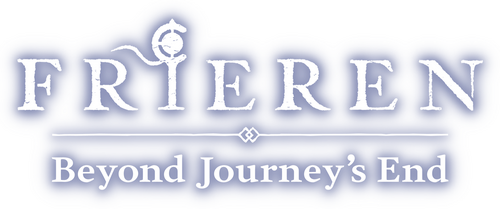
S1:E4 · The Land Where Souls Rest
Skip intro
1:24−22:31
Pause
Back 10
Forward 10
Episodes
Audio & subtitles
1080p · 5.1Quality
Next episode
OK acts on what's focused. Left and right while playing seek 10 s without bringing up the chrome. Holding opens the thumbnail strip and speeds up: 10 s, then 30 s, 60 s, 5 min.
Up focuses the scrub bar; Down from the control row opens Episodes. Back hides the chrome, and a second Back within 3 s leaves.
The intro is drawn on the bar in moss. The title appears once, in the top band. There's no Back arrow on TV: the remote has one.
The Quality control shows what's playing, so it's findable without opening anything.
Scrubbing with a remote
14:30
1:24−22:31
+13 min · OK to jump · Back to cancel
Next episode, and filler ahead
Next episode
5 · Phantoms of the Dead
Play now
Starts in 5 · Back to keep watching the credits
Episodes 5–6 are filler
Skip to 7Watch 5
Always skip filler
The countdown drains along the seal's base, not in a ring. With autoplay off, the seal reads "Play next" and doesn't count. Filler never counts down.
Audio, subtitles and quality
Side panels on TV and web, bottom sheets on phone. Plain language names, one qualifier at most. Changes apply live, and the panel remembers the choice for this show by default.
I overslept all the time.
Audio
✓Japanese Original
English Dub
Portuguese Dub
Subtitles
Off
✓English
English Signs
Portuguese Brazil
Spanish
Keep for Frieren
Subtitle style
Your defaults
Quality
✓Auto1080p now
4KDolby VisionAtmos
1080pHDR5.1
720p
Data saver
Speed1×
Make this the default on this TV
You haven’t seen it?
SUBTITLE STYLE · OUTLINE, M
Size
SMLXL
Look
OutlineShadowBox
Colour
PaperYellow
Quality rows show only what this screen can display. "Auto" says what it's playing. Speed moves into Quality's footer, because it's rarer than quality.
Subtitle style previews live over the picture. The house default is Zen Maru 700 in paper with an ink outline, and no box.
The player on phone
S1:E4 · The Land Where Souls Rest
8:41 / 23:56EpisodesAudio & subtitles1080pNext
The quality tag is a tap target of its own, one tap from the Quality sheet. Labels sit beside the icons in landscape; the bottom row reaches into the home-indicator inset.
Double-tap the sides for ±10 s (it stacks while tapping), drag the left half for brightness and the right half for volume, pinch to fill.
Header and settings
Series, Films and Anime move into the header as destinations, like Netflix's Shows and Movies. The avatar is about who's watching: profiles and the account. Settings get their own gear, and quality moves into Settings and the player.
kimono watch
K
KAM+
Settings
Kimono account
Switch profile
2023 · 13+ · 1 season HD5.1
Resume S1:E4More info
Settings on TV
Settings
Languages
Subtitle style
Playing
Quality on this TV
Switch profile
My language
English
Anime
Original, with subtitlesDubbed when there is one
Films and series
Original audioMy language when there is one
Subtitles
Automatic: when the audio isn’t in your language.
AutomaticAlwaysOff
Subtitle language
Same as my language
Settings on phone
Settings
Languages
My languageEnglish ›
Anime
SubtitlesDubbed
Films and series
OriginalMy language
Subtitles
AutomaticAlwaysOff
Subtitle styleOutline · M ›
Playing
Autoplay next episode
Skip intros and recaps
Filler episodes
AskSkipWatch
Quality on this phone
Auto1080p720pSaver
This phone plays 1080p · HDR10
Same groups, same order everywhere: Languages, Subtitle style, Playing, Quality on this device.
Reachable from: the header gear (web, phone, TV), the avatar menu, the player's "Your defaults" row, and the title page's Sub | Dub joint.
Saves as you change it, with a brief moss tick and no Save button. Segmented joints for four options or fewer, never dropdowns.
Quality lists only what this device can play. The web never offers 4K. One plain line says what the device can do.
One helper line on the whole page, under Subtitles: Automatic.
Loading that tells the truth
Four stages, each from a real signal, shown on Kimono's InkRing. The web has already moved to InkRing and its stepped stages. The server stage events would make every step real. Stages that are already done show filled, without fake animation.
S1:E4 · The Land Where Souls Rest
54%
✓ Find✓ ChoosePrepareBuffer
Getting it ready · picked 1080pHD5.1
Back to leave
15%
FindChoosePrepareBuffer
Finding the best copy · 3 of 5 places checked
This one’s taking a while.
Try another copyBack
Switching to 4K · Buffering 72%4KDolby Vision
Only the house loaders. InkRing for the start of playback, with a real percentage: each stage owns a span of the ring and fills it by its real signal, and the ring holds still when there's no signal. InkLoader for waits with no measure (stalls, sign-in, app start). InkWave for linear progress (the mid-play band, downloads). Android's own WavyRing goes.
After 12 s with no stage change, one quiet line appears. After 25 s, "Try another copy" picks the next version.
Changing quality mid-play keeps the last frame, dimmed, with a slim band. It never cuts to black.
Start sooner: the web asks the server to warm the stream as soon as the title page opens, or as soon as Resume gets focus on TV.
Format tags
Stamps, not pills: a hairline border with 2 px corners. They show only what this device will actually get, and nothing when it's unknown. Cards carry one tag at most (4K); the title page carries the full set.
2023 13+ 28 episodes HD5.1
Resume S1:E4
SubDub
Episode 4 of 28 · 24 left · 21 m left in this one
Audio: Japanese, English · Subtitles: English, Portuguese +4
Cast: Atsumi Tanezaki, Kana Ichinose Genres: Fantasy, Drama, Adventure
Rows, See all and sorting
Logos on the art and names under the cards, so nothing is typed over a still. Every row scrolls, shows an arrow while there's more, and its title opens the full category.
Because you watched Frieren Explore all ›
To Your Eternity2021 · Anime
Natsume’s Book of Friends2008 · Anime
4K
Demon Slayer: Kimetsu no Yaiba2019 · Anime
The Apothecary Diaries2023 · Anime
My list with sort and filters (web)
kimono watch
K
My list
AllSeriesFilmsAnime
FiltersSort: Recently added
✓ Recently added
Recently watched
Release year, newest
Release year, oldest
A–Z
In progress · Plays in 4K · Clear
Frieren2023
4K
The Odyssey2026
The Apothecary Diaries2023
4K
Lupin2021
4K
Godzilla Minus Zero2026
Demon Slayer2019
Natsume’s Book of Friends2008
TV: the row ends in See all, focus stays put
Anime
To Your Eternity2021 · 3 seasons
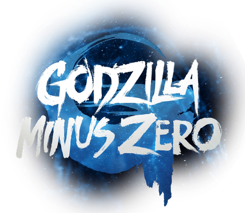
Anime
See all ›
Sort options: My list has Recently added, Recently watched, Release year and A–Z. Categories have Popular, Release year, A–Z and Recently added to Kimono. Search has Best match, Release year and A–Z.
Filters: genre, not started / in progress / finished, plays in 4K, has a dub in my language. Active filters show as one line of text, not chips.
Years everywhere, so the two Doraemons stop looking like a bug.
Brand: one bloom everywhere
The web header is right: the house lockup, as in Photos and VPN. Android still wears the demo's made-up 観 seal in four places, the launcher calls the app "Watch", and the web tab shows Kimono's generic favicon.
Surface
Now
Should be
Web header
AppLockup: bloom, kimono, watch ✓
No change
Web favicon
Kimono’s generic favicon
Watch’s bloom at 16, 32 and 48 px, plus a 180 px touch icon
Web tab title
“Kimono Watch · Kimono”
“Kimono Watch”, or “Frieren · Kimono Watch”
Android launcher
観 seal, labelled “Watch”
The bloom on night, labelled “Kimono Watch”
Themed icon
観 seal silhouette
The bloom silhouette with the play glyph cut out
TV banner
観 seal and a wordmark
The lockup at banner scale
TV and phone header
観 and “KIMONO” in capitals
Shared InkBloom with the play glyph, kimono, watch